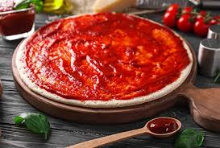

Pizza Sosu Tarifi
Malzemeler:
- 1/2 kilogram domates
- 1 adet orta boy soğan
- 3 diş sarımsak
- 2 yemek kaşığı zeytinyağı
- 1 çay bardağı ılık su
- 7-8 yaprak fesleğen
- 1 tutam taze kekik
- 2-3 adet defne yaprağı
- 1 tepeleme yemek kaşığı şeker
- 1 çay kaşığı tuz
- 1 çay kaşığı karabiber
Yapılışı:
1. Domatesleri doğrayıp tencereye alın, üzerine suyu ekleyin.
2. Soğan ve sarımsakları doğrayıp zeytinyağında kavurun.
3. Kavrulmuş soğanlar ve sarımsakları domateslere ekleyin, baharatları da ekleyin.
4. Karışım kaynadığında pizza sosunuz hazır! Afiyet olsun!